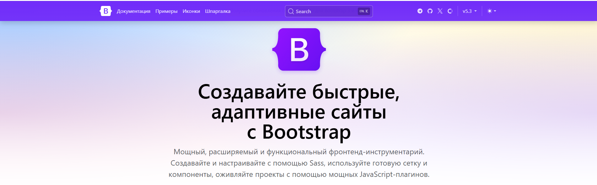

Bootstrap 5 это бесплатная коллекция CSS и JavaScript/jQuery с
открытым
исходным
кодом, которая используется для создания
динамических макетов веб-сайтов и веб-приложений. Bootstrap — один из самых
популярных интерфейсных фреймворков с
большим набором готовых CSS-кодов. Bootstrap использует различные типы классов
для
создания адаптивных веб-сайтов.
Bootstrap 5 был официально выпущен 16 июня 2020 года после нескольких месяцев
доработки его функций.
Bootstrap — это фреймворк, который подходит для веб-разработки, ориентированной
на
мобильные устройства. Это означает,
что код и шаблоны, доступные в Bootstrap, подходят для экранов разных размеров.
Он
адаптивен для экранов любого размера.
Фреймворк бесплатный, и его можно использовать двумя способами: либо загрузить
zip-файлы и включить библиотеки/модули
Bootstrap в проект, либо напрямую указать URL-адрес Bootstrap и использовать
онлайн-версию.
Что такое Bootstrap и как он упрощает вёрстку?
Bootstrap позволяет очень быстро создавать сайты любого типа благодаря широкому набору готовых классов и компонентов. Вы буквально «складываете» дизайн из готовых блоков, что значительно ускоряет разработку. Однако такой подход также может приводить к тому, что многие Bootstrap-сайты выглядят схоже. Несмотря на это, фреймворк остаётся незаменимым инструментом для фронтенд-разработки, особенно при создании интерфейсов и админ-панелей.
Как работает Bootstrap?
Bootstrap представляет собой набор CSS и JavaScript файлов, которые достаточно подключить к странице. После подключения вам становятся доступны следующие возможности:
- колоночная система (сетка Bootstrap);
- готовые классы для стилизации базового контента (текста, изображений, кода, таблиц и элементов <figure>);
- библиотека компонентов (кнопки, формы, навигационные панели, слайдеры, выпадающие списки, аккордеоны, модальные окна, всплывающие подсказки и др.);
- утилитные классы для управления отступами, выравниванием, видимостью элементов и другими часто используемыми задачами.
Примеры использования
1. Создание кнопки. Чтобы создать кнопку с помощью Bootstrap, достаточно добавить несколько классов к ссылке или элементу <button>:
<!-- Чтобы сделать ссылку в виде кнопки, добавьте классы: btn и btn-success -->
<a href="#" class="btn btn-success">
Ссылка, оформленная в виде кнопки
Всего несколько секунд, и кнопка готова.
Ссылка, оформленная в виде кнопки2. Создание вкладок. Для создания вкладок достаточно использовать готовый HTML-фрагмент и отредактировать его в соответствии с вашими потребностями. Пример для Bootstrap 5:
<!-- Bootstrap 5 -->
<nav>
<div class="nav nav-tabs" id="tab" role="tablist">
<!-- атрибут data-bs-target должен указывать на
элемент, который необходимо показать-->
<button class="nav-link active" id="tab-section-1" data-bs-toggle="tab"
data-bs-target="#section-1" type="button" role="tab"
aria-controls="nav-section-1" aria-selected="true">
Секция 1
</button>
<button class="nav-link" id="tab-section-2" data-bs-toggle="tab"
data-bs-target="#section-2" type="button" role="tab"
aria-controls="nav-section-2" aria-selected="false">
Секция 2
</button>
<button class="nav-link" id="tab-section-3" data-bs-toggle="tab"
data-bs-target="#section-3" type="button" role="tab"
aria-controls="nav-section-3" aria-selected="false">
Секция 3
</button>
</div>
</nav>
<div class="tab-content p-3" id="nav-tabContent">
<!-- атрибут id определяет вкладку -->
<div class="tab-pane fade show active" id="section-1"
role="tabpanel" aria-labelledby="nav-section-1-tab">
...Секция 1
</div>
<div class="tab-pane" "id="section-2"role="tabpanel
aria-labelledby="nav-section-2-tab">
...Секция 2
</div>
<div class="tab-pane fade" d="section-3"
role="tabpanel" aria-labelledby="nav-section-3-tab">
...Секция 3
</div>
</div>
И всё – вкладки готовы. Как видно, даже сложные элементы интерфейса можно создать за
считанные секунды.
Но, Bootstrap – это не просто набор готовых инструментов (HTML-фрагментов, классов,
компонентов и плагинов). Это гибко
настраиваемый фреймворк, который можно адаптировать под нужды вашего проекта.
Редактируя
Sass-переменные и используя
миксины, вы можете изменить внешний вид и поведение компонентов, чтобы они
соответствовали
вашему уникальному дизайну.
Из чего состоит Bootstrap?
Bootstrap включает в себя набор инструментов и компонентов, которые позволяют быстро создавать адаптивные и функциональные веб-сайты и приложения. Основные составляющие фреймворка:
- Инструменты для создания макета: Обёрточные контейнеры, гибкая система сеток, медиа-объекты и адаптивные утилитные классы, позволяющие структурировать и организовать контент на странице.
- Классы для стилизации базового контента: Набор стилей для оформления текста, изображений, кода, таблиц и элементов с разметкой <figure>, что упрощает применение единообразного дизайна к стандартным HTML-элементам.
- Готовые компоненты: Широкий ассортимент элементов интерфейса, таких как кнопки, формы, навигационные панели (горизонтальные и вертикальные), слайдеры, выпадающие списки, аккордеоны, модальные окна, всплывающие подсказки и другие, позволяющие быстро интегрировать функциональные блоки в дизайн сайта.
- Утилитные классы: Набор классов для решения типичных задач веб-разработки: выравнивание текста, управление видимостью элементов, задание цветов, фонов, а также регулировка внешних и внутренних отступов (margin и padding).
Эти компоненты делают Bootstrap мощным инструментом, который значительно ускоряет процесс разработки адаптивных и современных веб-интерфейсов.
С чего начать изучение Bootstrap?
Первый шаг – скачать фреймворк и подключить его к вашей странице. Подробную инструкцию по установке можно найти в статье «Установка платформы Bootstrap».После подключения возникает естественный вопрос: «Что дальше? Как использовать Bootstrap?». Ответ прост – все основы работы с фреймворком сводятся к двум основным этапам.
1. Изучите систему сетки. Система сетки является фундаментом Bootstrap, позволяющим создавать адаптивные макеты, отлично работающие на любых устройствах.
Что необходимо сделать:
- Ознакомиться с принципами работы сетки: Изучите, как с помощью готовых классов создавать колонки, ряды и контейнеры, которые обеспечивают гибкость и адаптивность вёрстки;
- Практиковаться: Создавайте простые макеты страниц, экспериментируйте с разметкой блоков и структурой страницы. Практические упражнения помогут закрепить теоретические знания.
- Учитывайте особенности версий: При изучении сетки учитывайте, в версиях 4 и 5 применяется Flexbox, что обеспечивает более гибкое и интуитивное позиционирование элементов.
2. Освойте компоненты. После того как вы уверенно освоили систему сетки, переходите к изучению компонентов Bootstrap. На этом этапе важно:
- Понять, как создаются и настраиваются компоненты: Научитесь использовать стандартные элементы – кнопки, карточки, навигационные панели, модальные окна, формы и другие – и адаптировать их под дизайн вашего проекта.
- Экспериментировать с размещением: Практикуйтесь в интеграции компонентов в макет страницы, меняйте их стили и поведение. Это поможет понять, как компоненты взаимодействуют друг с другом и с базовой разметкой.
- Изучать примеры и документацию: На нашем сайте представлено множество примеров и вариантов настройки компонентов, что позволит вам быстро освоить их использование.
Макет начальной загрузки
Макет Bootstrap основан на гибкой сетке, которая легко подстраивается под разные размеры экрана. Для создания адаптивных дизайнов используется система из 12 столбцов. Вы можете управлять шириной и расположением столбцов, комбинируя классы для разных размеров экрана (например, .col-md-6 для устройств среднего размера).
Точки остановаBootstrap 5 Точки останова макета — это значения ширины экрана, при которых меняется внешний вид и поведение элементов на веб-странице. Эти точки останова позволяют создавать адаптивный дизайн, настраивая расположение и оформление контента для различных устройств, таких как мобильные телефоны, планшеты и настольные компьютеры.
Точка останова |
Инфикс класса |
Размеры |
|---|---|---|
| extra-small | none | <576px |
| small | sm | >=576px |
| medium | md | >=768px |
| large | lg | >=992px |
| extra large | xl | >=1200px |
| extra extra large | xxl | >=1400px |
Эти точки останова разработаны таким образом, чтобы идеально соответствовать 12 разделам, а размеры можно изменить в таблице Sass _variable.scss stylesheet.
Пример 1. В приведенном ниже примере кода показано, как можно применить доступные точки останова для создания адаптивной вложенной сетки.
<!doctype html>
<html lang="en">
<head>
<link href="https://cdn.br.net/npm/bootstrap@5.0.2/
dist/css/bootstrap.min.css" rel="stylesheet">
</head>
<body>
<h1 class="ms-4 mt-3 text-success">
GeeksforGeeks
</h1>
<h4>
Bootstrap 5 Breakpoints Available breakpoints
</h4>
<pre class="m-4">
Responsive Nested Grid
</pre>
<div class="container">
<div class="row">
<div class="col-md-2
bg-light border
border-warning">
Outer: .col-md-2
</div>
<div class="col-md-10
bg-light
text-light
border border-warning">
<div class="row">
<div class="col-6 col-md-4
bg-secondary
border
border-warning">
Nested: .col-6
.col-md-4
</div>
<div class="col-6 col-md-8
bg-secondary
border
border-warning">
nested: .col-6 .col-md-8
</div>
</div>
</div>
</div>
</div>
</body>
</html>
GeeksforGeeks
Bootstrap 5 Breakpoints Available breakpoints
Responsive Nested Grid
- Медиазапросы
-
используют точки останова для применения стилей в зависимости от параметров экрана, таких как минимальная ширина.
Мы используем несколько медиазапросов для применения разных таблиц стилей на разных устройствах, чтобы создать подходящие точки останова для наших макетов и интерфейсов.
Эти точки останова в основном основаны на минимальной ширине области просмотра и позволяют нам масштабировать элементы при изменении области просмотра. В исходных файлах Sass для макетов, сеточной системы и компонентов Bootstrap в основном используются следующие диапазоны медиазапросов — или точки останова.
- Контейнеры
- это базовый элемент разметки в Bootstrap, который обязателен при
использовании нашей системы сеток по умолчанию.
Контейнеры используются для размещения, отступов и (иногда)
центрирования содержимого внутри них. Хотя контейнеры могут
быть вложенными, для большинства макетов вложенный контейнер не
требуется.
В Bootstrap есть три разных контейнера:
Фиксированный контейнер .container, который устанавливает max-width для каждой адаптивной точки останова
.container
Контейнер Fluid (контейнер полной ширины) .container-fluid, которая является width: 100% для всех точек останова.
.container-fluid
Адаптивные контейнеры Вы также можете использовать классы.container-sm|md|lg|xl, чтобы определить, когда контейнер должен реагировать. max-width контейнера будет меняться в зависимости от размера экрана/окна просмотра:
Class Extra small
<576pxSmall
≥576pxMedium
≥768pxLarge
≥992pxExtra large
≥1200pxXXL
≥1400px.container-sm100% 540px 720px 960px 1140px 1320px .container-md100% 100% 720px 960px 1140px 1320px .container-lg100% 100% 100% 960px 1140px 1320px .container-xl100% 100% 100% 100% 1140px 1320px .container-xxl100% 100% 100% 100% 100% 1320px
- Заполнение контейнера
- По умолчанию контейнеры имеют отступы слева и справа, без отступов
сверху и снизу. Поэтому мы часто используем утилиты
для создания пробелов, такие как дополнительные отступы и поля, чтобы
они выглядели еще лучше. Например, .pt-5 означает
«добавить большой верхний отступ»:
container pt-0container pt-1container pt-2container pt-3container pt-4container pt-5
- Граница и цвет контейнера
-
col-sm-3 border-1 bg-info boxcol-sm-3 border-1 bg-primary boxcol-sm-3 border-1 bg-dark text-white box"col-sm-3 border-1 bg-primary text-white box
Сеточная система Bootstrap 5
Система сеток Bootstrap построена на основе flexbox и позволяет разместить на
странице до 12 столбцов.
Если вы не хотите использовать все 12 столбцов по отдельности, вы можете
сгруппировать их вместе, чтобы создать болееширокие столбцы:
| span 1 | span 1 | span 1 | span 1 | span 1 | span 1 | span 1 | span 1 | span 1 | span 1 | span 1 | span 1 |
| span 2 | span 2 | span 4 | span 2 | span 2 | |||||||
| span 3 | span 3 | span5 | span 1 | ||||||||
| span 4 | span 4 | span 4 | |||||||||
| span 5 | span 5 | span 2 | |||||||||
| span 12 | |||||||||||
Система сеток адаптивна, а расположение столбцов автоматически меняется в зависимости от размера экрана.
Классы сетки
Система сеток Bootstrap 5 имеет шесть классов:
- .col-(очень маленькие устройства - ширина экрана менее 576 пикселей)
- .col-sm- (маленькие устройства — ширина экрана равна или превышает 576 пикселей)
- .col-md- (средние устройства — ширина экрана равна или превышает 768 пикселей)
- .col-lg- (большие устройства — ширина экрана равна или превышает 992 пикселя)
- .col-xl- (устройства xlarge - ширина экрана равна или превышает 1200 пикселей)
- .col-xxl- (устройства xxlarge - ширина экрана равна или превышает 1400 пикселей)
Вышеуказанные классы можно комбинировать для создания более динамичных и
гибких
макетов.
Совет. Каждый класс масштабируется, поэтому, если вы хотите
установить одинаковую ширину для sm и md, вам нужно указать
только sm.
Базовая структура сетки Bootstrap 5
Ниже приведена базовая структура сетки Bootstrap 5:
HTML
<!-- Контролируйте ширину столбцов и то, как они должны отображаться на разных устройствах -->
<div class="row">
<div class="col-*-*"></div>
<div class="col-*-*"></div>
</div>
<div class="row">
<div class="col-*-*"></div>
<div class="col-*-*"></div>
<div class="col-*-*"></div>
</div>
<!-- Или позвольте Bootstrap автоматически обрабатывать макет -->
<div class="row">
<div class="col"></div>
<div class="col"></div>
<div class="col"></div>
</div>
Три колонки одинаковой ширины
Примечание: Попробуйте добавить новый div с class="col" внутри класса row - это создаст четыре столбца одинаковой ширины.